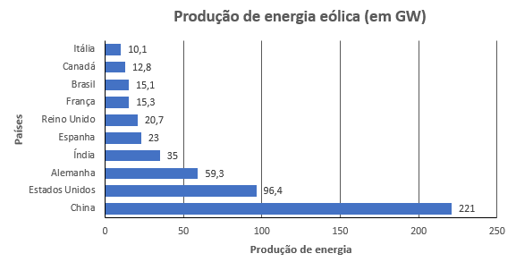
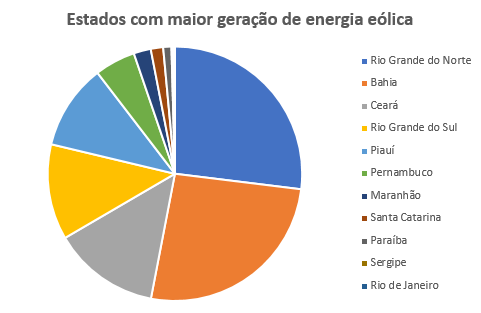

Dados globais sobre a produção de energia eólica
Geração de energia eólica em 2019 por país (Top 10):
| Posição |
País |
Produção de energia eólica (em GW) |
| 1º |
China |
221 |
| 2º |
Estados Unidos |
96,4 |
| 3º |
Alemanha |
59,3 |
| 4º |
Índia |
35 |
| 5º |
Espanha |
23 |
| 6º |
Reino Unido |
20,7 |
| 7º |
França |
15,3 |
| 8º |
Brasil |
15,1 |
| 9º |
Canadá |
12,8 |
| 10º |
Itália |
10,1 |

Estados brasileiros que mais geram energia eólica
| Posoção |
Estados |
Capacidade instalada (em MW) |
| 1º |
Rio Grande do Norte |
4066,1 |
| 2º |
Bahia |
3935 |
| 3º |
Ceará |
2045,4 |
| 4º |
Rio Grande do Sul |
1831,8 |
| 5º |
Piauí |
1638,1 |
| 6º |
Pernambuco |
782 |
| 7º |
Maranhão |
328,8 |
| 8º |
Santa Catarina |
238,5 |
| 9º |
Paraíba |
157,2 |
| 10º |
Sergipe |
34,5 |
| 11º |
Rio de Janeiro |
28,1 |
| 12º |
Paraná |
2,5 |
